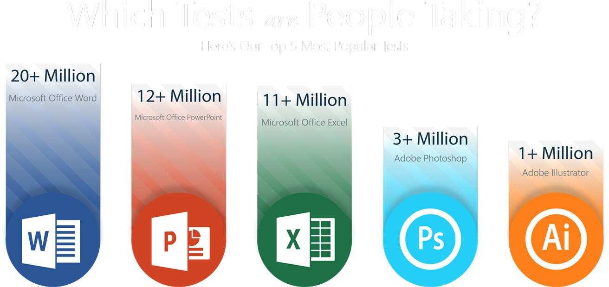
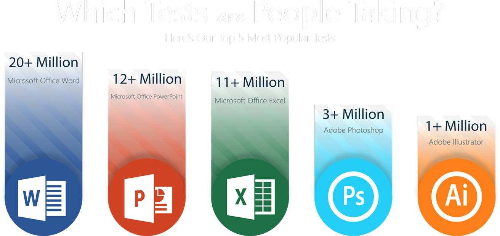

I am going to be telling you about mos which stands for (Microsoft office specialist)its where you learn about Microsoft word,power point,excel,access.plus you will have an exam on it and get a certificate at the end of it. Microsoft Office Specialist is where you can learn new skills from day to day. For example, you can learn how to create databases and spreadsheets. You can also learn about how to use Microsoft access, create tables, run and create Macros and learn about data analysis, data visualization and how to validate data and create documents. Once you have gained this knowledge, you sit an exam and receive a certificate. The knowledge and experience gained from MOS will demonstrate to future employers, the skills and confidence you have in IT and will enhance your CV for many employers.


 
